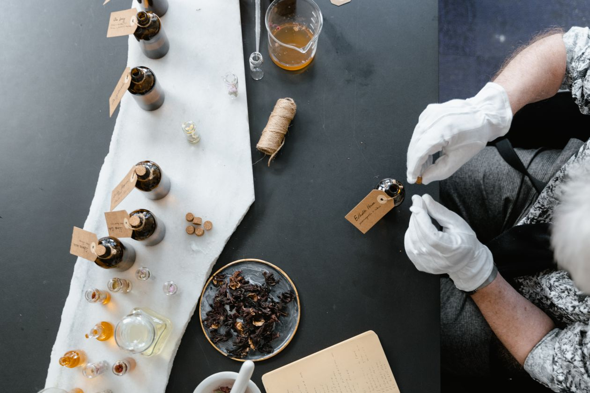

METHOD & MATERIALS
Eleven years of other people's formulas, then my own bench.
I trained in Grasse, where perfumery is not a romance but a local industry, and then spent six years formulating for a contract fragrance house — the unglamorous end of the trade, where a fragrance must survive a factory, a budget and a compliance review, not just a blotter. It is the best education a perfumer can get, and it is why this atelier works the way it does: structure first, documentation always, and no claim the file cannot support.
Independent since 2016, I take two commissions at a time. Most are small: a candle brand's winter fragrance, a soap maker who has outgrown bought-in oils, a private client who wants the smell of a place that matters to her. The bench holds around three hundred materials — naturals, synthetics, and the honest majority that are both questions at once — and every one of them is there because it earns its shelf.
What I will not do is as much the practice as what I will: no copying a living perfumer's work, no "inspired-by" briefs aimed at a famous bottle, no undisclosed reformulation of a product already on sale. Case File 03 is the template: when the rules move, the client hears it from me first, in writing.

HOW A COMMISSION RUNS
Five stages, no surprises.
The brief
A conversation, then a written brief you sign: what the fragrance is for, where it will live (skin, wax, oil, soap), what it must never smell of, and the budget for materials. Most failed fragrances fail here, on paper, cheaply — which is the point of paper.
Blotter sessions
First accords on blotters, in the atelier or posted with bench notes. You smell directions, not finished perfume — a citrus accord is a promise about the first fifteen minutes, and I will tell you exactly that.
Iterations
Three rounds are included in every commission; more are €160 a round, and the estimator on the home page shows the arithmetic. Each round changes one structural decision at a time, so we always know what made the difference. Rounds end when the brief is met — or when I tell you the brief, as written, fights itself.
Maceration, stability & compliance
The chosen formula rests, is tested in its real base (wax, oil, emulsion — never just in alcohol), and is documented: allergen calculation and an IFRA-conformity statement for the formula as supplied. This is unglamorous and non-negotiable; it is also where restricted materials are caught before they cost you a product.
Production handover
Brand formulas transfer to you on final payment, with production notes your manufacturer can actually use. Bespoke formulas are archived under your name for exact refills, and are never resold or adapted for anyone else.
Materials honesty
Natural is not a synonym for safe. Some of the most potent allergens on the bench are naturals — oakmoss and certain citrus oils among them — and the industry restrictions apply to them exactly as they apply to synthetics. A natural material can also be an ecological problem: true sandalwood was over-harvested for decades, and a responsible formula says where its wood came from.
Synthetic is not a synonym for cheap. Modern synthetics give the bench things nature cannot supply consistently or ethically — clean musks without animals, stable green notes, captive molecules a naturals-only palette simply lacks. Most good formulas, including most of mine, are marriages of the two. Anyone selling you purity is selling you a story; the file should sell you a structure.
Allergens & compliance, plainly: every formula leaves this bench with its allergen calculation done and its conformity to the current industry restrictions stated in writing. Final product labelling and category-specific testing remain the brand's legal duty — I document the fragrance; your compliance adviser signs the product. That boundary is stated here so it never has to be discovered later.
Engagement terms
Deposit: 40% on signing the brief, balance on handover. Timelines: bespoke commissions typically 8–12 weeks; brand development 10–16 weeks, because stability testing cannot be hurried. Formula ownership: brand formulas transfer in full on final payment; bespoke formulas are reserved to the client, archived for refills, never reused. Capacity: two commissions at a time; the register on the home page shows the current state honestly.